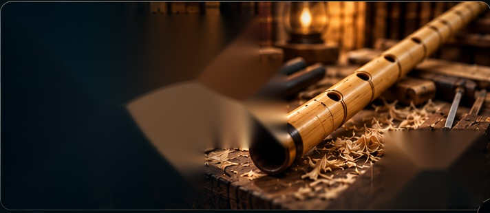

Ölçü hesapları
Ney boyu, iç çap, perde yerleşimi ve gövde ölçüleri için hesaplama yaklaşımı.
Ney yapımının inceliklerini ölçüm, hesaplama ve kayıt araçlarıyla bir araya getiren dijital çalışma alanı. Geleneksel yöntemlere saygılı, teknik ayrıntılara meraklı.

Ney yapımındaki teknik adımları daha anlaşılır ve düzenli hale getirmeyi amaçlayan dijital yardımcılar.
Ney boyu, iç çap, perde yerleşimi ve gövde ölçüleri için hesaplama yaklaşımı.
Temel frekans ve akort ilişkilerini incelemeye yardımcı teknik araçlar.
Perde deliklerinin konumlarını ve birbirleriyle olan ilişkilerini değerlendirme.
Çalışma sırasında kullanılan ölçüleri ve notları bir arada tutmaya yönelik düzen.
Ney yapımında karşılaşılan kavram ve aşamaları takip etmeyi kolaylaştıran içerikler.
Geleneksel ustalık bilgisini teknik düşünme ve sistemli ölçümle buluşturma.
Ney yapımında ölçüler birbirinden bağımsız değildir. Boy, iç hacim, perde konumları ve akort ilişkisi birlikte düşünülmelidir. Sistem bu ilişkileri daha görünür hale getirmeyi hedefler.
Neyyapimi.com'u ziyaret et ↗Çalışılacak ney türü ve temel ölçüleri belirle.
Ölçü ve akort ilişkilerini birlikte değerlendir.
Sonuçları yapım sürecindeki gerçek ölçülerle karşılaştır.
Teknik notlarını sonraki çalışmalar için düzenle.
Ney ve bağlama yapımına yönelik hesaplama, ölçüm, çizim ve nota araçlarının gerçek kullanım ekranlarından seçkiler.
 01 / NEY AÇKI SİSTEMİ
01 / NEY AÇKI SİSTEMİNey türü, kamış boyutları, çap ve boğum uzunlukları.
Canlı sistemi aç ↗ 02 / TEKNİK ÇİZİM
02 / TEKNİK ÇİZİMPerdelerin ney üzerindeki yerleşimi ve ölçüleri.
Canlı sistemi aç ↗ 03 / HESAPLAMA
03 / HESAPLAMANota, frekans, perde konumu ve boğum aralıkları.
Canlı sistemi aç ↗ 04 / ÇALIŞMA ALANI
04 / ÇALIŞMA ALANIÖlçüm, çizim ve hesaplamaların bir arada yönetimi.
Canlı sistemi aç ↗ 05 / MÜZİK
05 / MÜZİKNota yazımı, ölçü düzeni ve sanal klavye.
Nota editörünü aç ↗ 06 / BAĞLAMA
06 / BAĞLAMATekne, sap ve tel boyuna göre perde konumları.
Hesaplayıcıyı aç ↗Ney yapımına dair araçları ve hesaplama yaklaşımını keşfet.